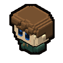

Your pioneer
- One pioneer per player: click where to go, or steer with the keys
- Strength, Agility, Vitality, Intelligence and Dexterity, and points that can always come back
- Health, stamina, running, experience and levels
- 22 hairstyles, 7 beards, skin, eyes, and clothes in two dyes of your choice